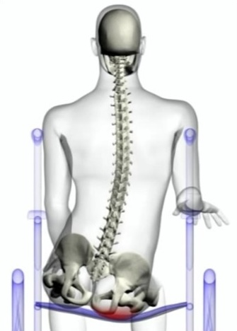
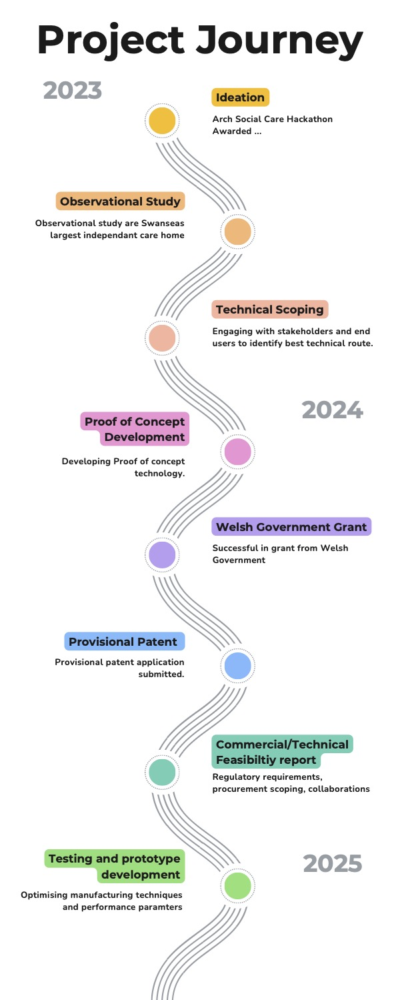
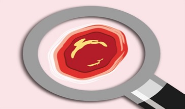
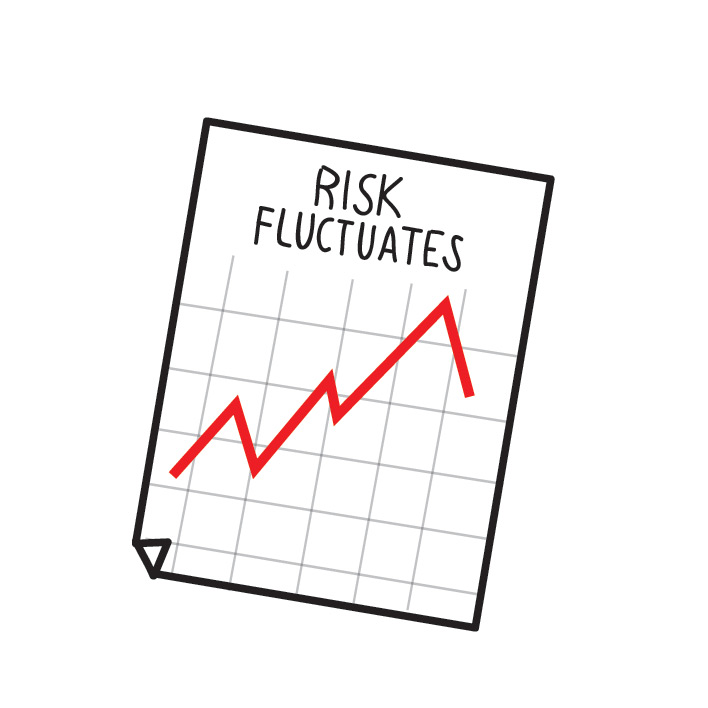
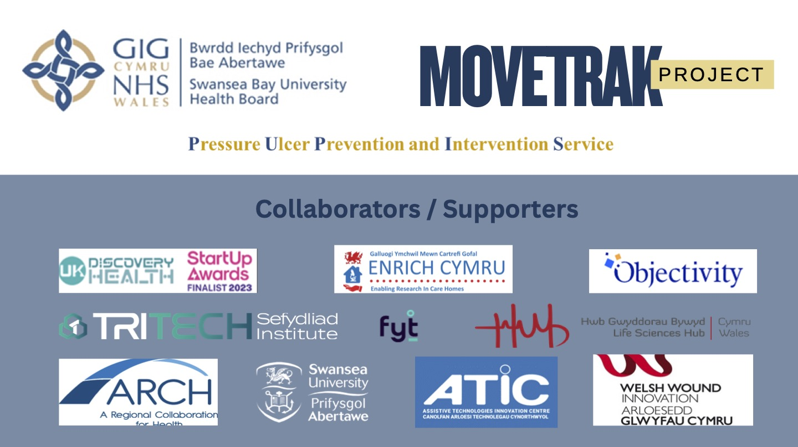

Welcome to MoveTrak
Innovative Sensing Technology to Monitor Movement in Care Homes
About MoveTrak
MoveTrak is a cutting-edge distributed sensing technology designed to monitor movement in care homes, reducing the risk of hospitalisations due to pressure ulcers.

The Team
Dr Mark Bowtell
Principal Clinical Scientist
Jennifer Brady
Rehabilitation Engineer
Peter Kinder
Trainee Clinical Scientist
Dr Andrew Claypole
Pre-Registration HealthCare Scientist
Susan Flavin
Clinical Nurse Specialist
Dr Lorna Tasker
Consultant Clinical Scientist
Background
The PUPIS team has worked with at-risk individuals in care and home settings for over two decades, identifying opportunities to prevent to prevent pressure ulcers through early intervention.

PUPIS
Pressure Ulcer Prevention & Intervention Service

Related Publications & Conferences
Research and Trials


Contact Us
You will be redirected to a Microsoft Form.
Email: SBU.PUPIS@Wales.nhs.uk
Telephone: 01792 703609
Ask for one of the MoveTrak team